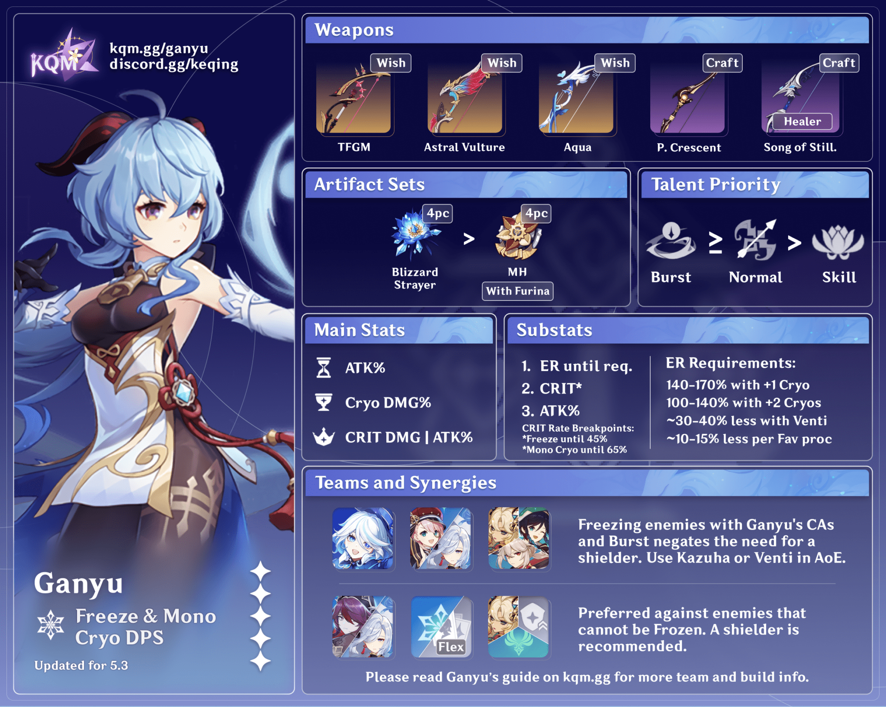
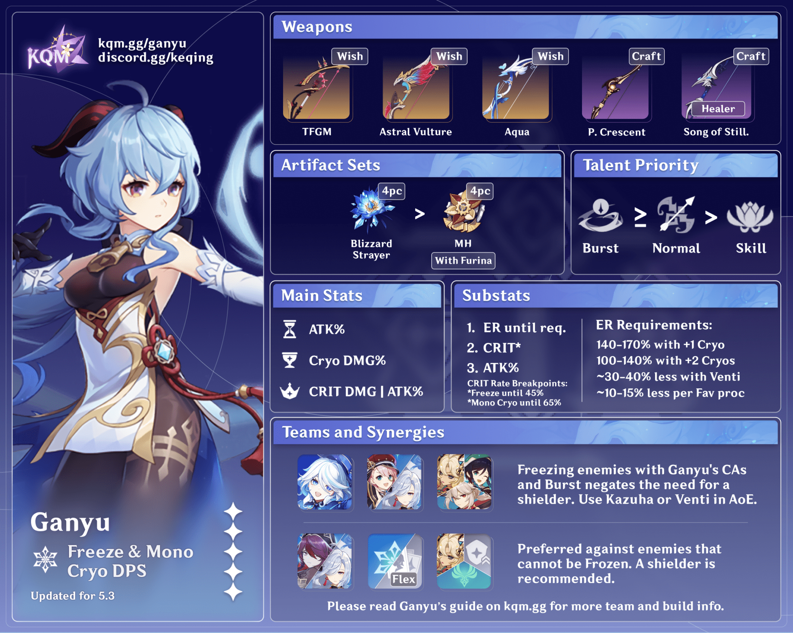

Ganyu
Element: Cryo
Weapon: Bow
Role: DPS
Ganyu is a quiet and gentle character from Genshin Impact. As the secretary of Yuehai Pavilion, she is known for her dedication and grace. Her Cryo abilities make her a powerful DPS character.
Element: Cryo
Weapon: Bow
Role: DPS
Ganyu is a quiet and gentle character from Genshin Impact. As the secretary of Yuehai Pavilion, she is known for her dedication and grace. Her Cryo abilities make her a powerful DPS character.
